Обзор
В этой статье рассказывается, как создавать и реализовывать анимированные формы смешивания в Maya.
Рис1: Модели
В этом руководстве может использоваться пример проекта GameSDK. Мы рекомендуем вам скачать это с База данных активов, импортируйте его в программу запуска, запустите оттуда, а затем создайте новый уровень.
См. эта страница чтобы узнать, как импортировать проект в программу запуска. (Папка по умолчанию для образца проекта GameSDK при загрузке: C:\Program Files (x86)\Crytek\CRYENGINE Launcher\Crytek\gamesdk_<XXX>\GameSDK)
Учебные файлы
Исходные сцены Maya ASCII с экспортированными файлами CRYENGINE:
sdk_blendshape_maya_tutorial.zip (2,9 МБ) (Извлеките его в папку «Ресурсы» в папке GameSDK. Местоположение этой папки по умолчанию указано выше.)
Настройте свой контент в Maya
Требования к сцене blendshape в Maya:
Все сетки blendshape (не удаляйте их!) должны существовать в вашей сцене Maya и находиться в том же месте в мировом пространстве, что и базовая сетка со скинами. Итак, переместите сетки blendshape поверх базовой сетки со шкурой:
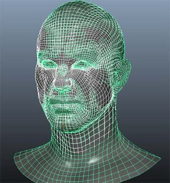
В некоторых редких ситуациях вы можете настроить свой Maya как Z-Up. Если это так, то для этого урока вам нужно будет сбросить его до Y-Up. Вы также должны установить свою сцену на 30 кадров в секунду и чтобы сантиметр когда дело доходит до экспорта:
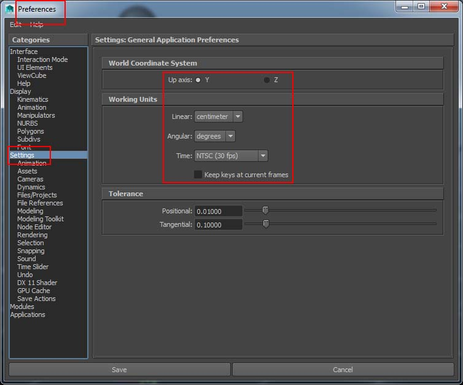
Вы должны «сгладить» хотя бы одно соединение с базовой сеткой blendshape.
В обучающей сцене базовая сетка головы была привязана к некоторым общим суставам (верхняя часть позвоночника, шея, голова, челюсть и т. д.).
Максимальное количество влияния — восемь. Ради производительности оставьте число до четырех.
CPU/Программное обеспечение скининга поддерживает 8 весов на вершину и формы смешивания.
GPU Поддержка скининга поддерживает 8 весов на вершину, но не поддерживает формы смешивания.
Связанное соединение верхнего уровня — «Spine04». Не добавляйте «корневой» сустав в сетку персонажа — он предназначен для экспорта CRYENGINE:
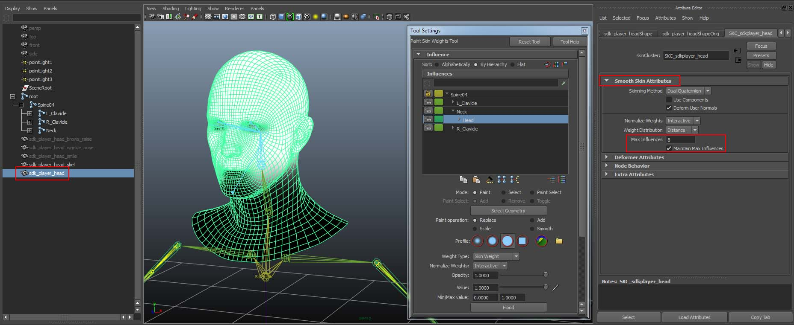
Обратите внимание на пустую группу «SceneRoot» и «корневой» сустав, созданный для ориентации CRYENGINE:
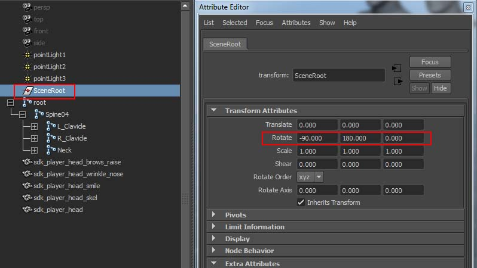
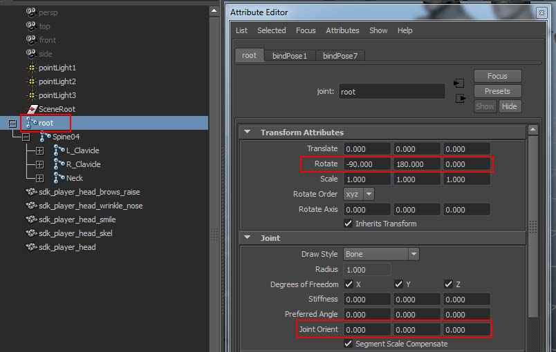
Убедитесь, что корневой узел иерархии скелета имеет «нулевое» вращение — это означает, что CRYENGINE интерпретирует его как ноль. Начиная с CRYENGINE 3.8 и по отношению к Maya существует правильно ориентированный, пустой групповой узел "SceneRoot" и "корневой" сустав в качестве узла верхнего уровня деформирующего скелета. Они настроены так, что оба смотрят вперед, причем их оси Z выровнены по мировой оси Y, а их оси Y выровнены по мировой оси Z:
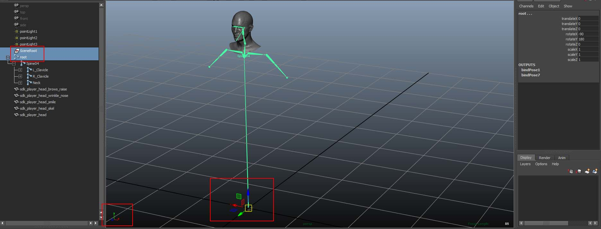
Для каждой сетки blendshape вы должны создать соединение в начале координат и назвать его <BLENDSHAPE_MESH_NAME> + "_blendWeightVertex", например "sdk_player_head_brows_raise_blendWeightVertex". Соединения "blendWeightVertex" являются родительскими элементами корневого соединения иерархии скелета. (Используйте сценарий ниже в шаге 5!)
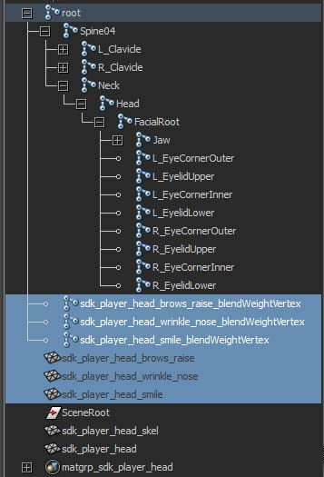
Вы должны сопоставить выходной диапазон весов узла blendShape от 0 до 1, от 0 до 100 атрибута translateX этих соединений. (Добавьте промежуточный узел MultiplyDivide!)
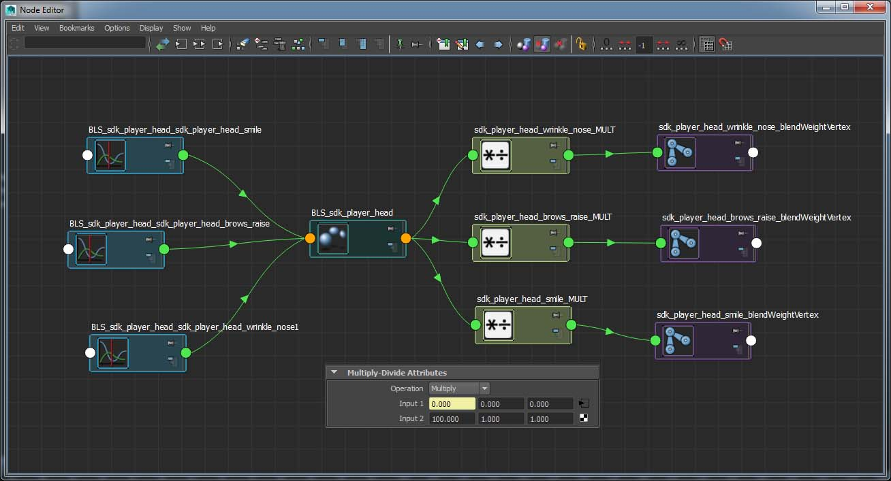
Вместо того, чтобы вручную создавать соединения и соединения, вы можете использовать для настройки приведенный ниже скрипт Python:
from maya import cmds def createBlendControlVertex(node, p=None, connect=True, debug=1): ''' Check outgoing "weight" connections of a blendShape node, create the appropriate blendWeightVertex joints. Optional: Connect and map the "weight" output range [0,1] of the blendShape node to [0,100] to the translateX attribute of these helper joints. Optional: Parent all blendWeightVertex joints under a transform node ''' if debug: print node blendNodes=[] blendVertexJnts=[] try: shapes = cmds.blendShape(node, t=1, q=1) shapeNode = cmds.listRelatives(node, children=1, shapes=1) blendShapeNode = cmds.ls(cmds.listHistory(node),type='blendShape')[0] for shape in shapes: n = shape.split('mesh__')[-1] + '_blendWeightVertex' if n not in blendVertexJnts: cmds.select(cl=1) jnt = cmds.joint(name=n) blendVertexJnts.append(jnt) blendNodes.append(jnt) if connect: try: mult = cmds.shadingNode('multiplyDivide', asUtility=1, name = shape + '_MULT') cmds.connectAttr((blendShapeNode + '.' + shape.split('mesh__')[-1]), mult + '.input1.input1X') cmds.setAttr(mult + '.input2X', 100) cmds.connectAttr(mult + '.output.outputX', (n + '.translateX')) except Exception as e: print e except: print 'createBlendControlVertex>>>', node, 'has no blendshapes!' if p: if blendNodes: cmds.parent(blendNodes, p) return blendNodesВставьте скрипт на вкладку скриптов Python редактора скриптов Maya и выполните его только один раз. Затем запустите скрипт командой. REMEMBER: Если вы решите использовать другую сетку головы, не забудьте заменить "sdk_player_head":
createBlendControlVertex( 'sdk_player_head', p=Нет, подключение=Истина, отладка=1)
Вы должны создать родительские соединения blendWeightVertex для "корневого" соединения CRYENIGINE. Однако вы также можете запустить команду (показана ниже), если «корневой» сустав уже создан:
createBlendControlVertex( 'sdk_player_head', p='root', Connect=True, debug=1 )
Необходимо создать фиктивный объект-полисетку четырех/треугольников и сгладить его кожу до узла иерархии скелета - лучше всего выбрать и включить самое верхнее деформирующее влияние в качестве единственного деформирующего соединения.
Зачем тебе этот манекен? Потому что этот узел включает только информацию об иерархии скелета и, таким образом, сохраняет модель с данными о коже и соединениях отдельно от скелета. Следовательно, когда вы прикрепляете «приложение скина» к Character Tool в CRYENGINE, данные модели и скинов отделяются от фактических данных скелета/соединений. Вы также можете прикрепить сетку для головы, а затем последовательно добавить больше одежды для верхней части тела и т. д.
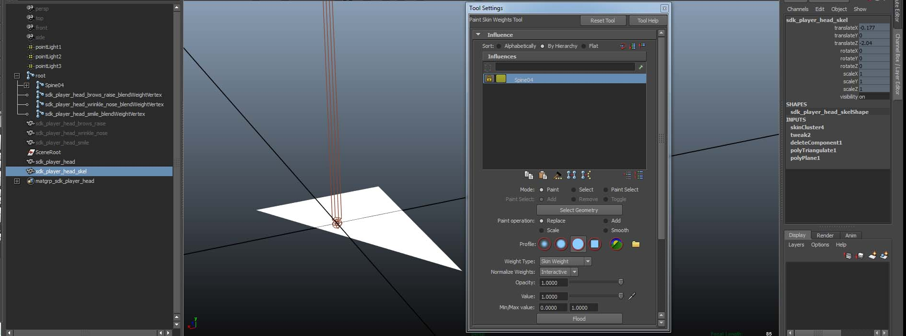
Наконец, вы можете добавить анимацию blendshape. Если вы заранее анимировали узел blendshape, то вы заметите, что суставы «blendWeightVertex» перемещаются при прокрутке временной шкалы.
Требования перед экспортом в CRYENGINE: (применяется ко всем экспортам символов с файлами ".SKIN" и *.CHR)
Для скиновой сетки с узлом BlendShape необходимо создать cryExportNode. Используйте «TOOLS» с полки Crytek или создайте, как показано на скриншотах ниже:
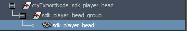
Второй cryExportNode должен быть создан для фиктивного квадратного/треугольного объекта сетки со шкурой:
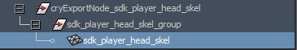
В cryExportNode сетки со шкурой с вашими blendshapes установите тип файла экспорта как «*.SKIN». Активировать Восемь весов на вершину:
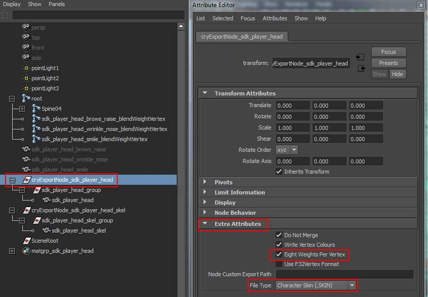
В cryExportNode фиктивной сетки со шкурой установите тип файла экспорта как «*.CHR».
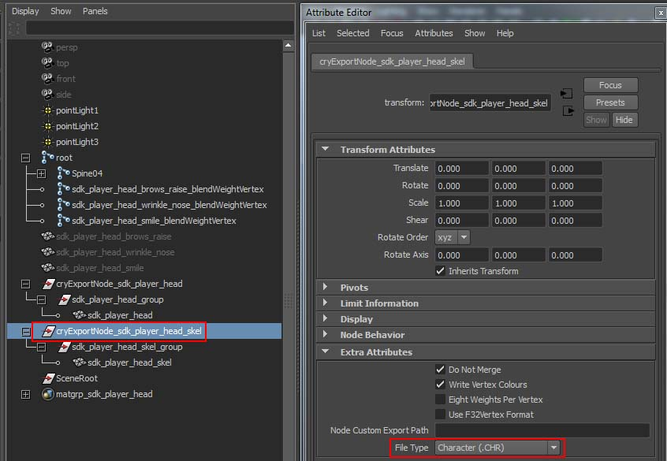
Добавьте подходящий материал к сетке blendshape со шкурой и, возможно, стандартный материал Фонга к фиктивному объекту. Нажмите кнопку MAT.ED значок с полки Crytek, чтобы добавить новую группу материалов, затем добавьте созданные вами шейдеры. Для сетки "sdk_player_head" добавлен dx11Shader и стандартный Phong для всего остального. dxShader будет использоваться позже для карт морщин в руководстве по картам морщин для CRYENGINE.
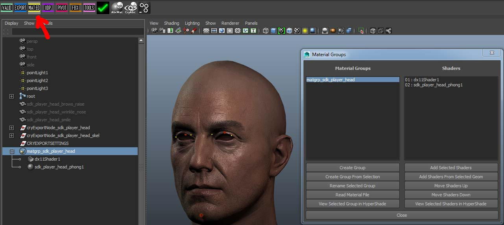
Экспорт
Перед следующим шагом убедитесь, что вы сохранили сцену Maya (если вы еще этого не сделали). Нажмите кнопку EXPORT значок на полке Crytek и экспортируйте оба cryExportNodes:
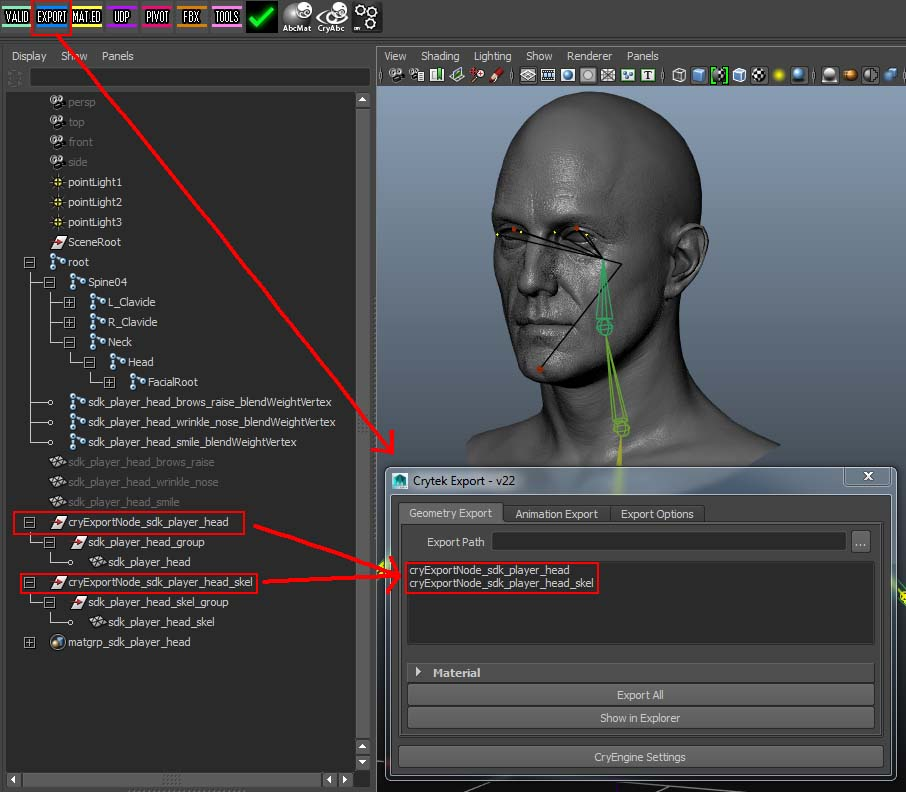
Обратите особое внимание на то, из какого фрейма вы экспортируете файлы «*.SKIN» и «*.CHR». Перемотайте временную шкалу Maya к кадру, где находится ваша поза привязки.В нашем случае мы привязали геометрию к скелету в кадре 0.
В Экспорт анимации вкладка добавить новую анимацию для экспорта. Введите имя анимации (которое будет отображаться в CRYENGINE), а также позиции начального и конечного кадра. Затем укажите Экспортеру корневой узел персонажа со скином: в нашем случае это «корневой» сустав — вы также можете вручную добавить папку экспорта (это должна быть подпапка
YOUR_PROJECT_FOLDER\Animations\...).
Наконец, нажмите Экспортировать все анимации.Примечание: Экспортировать выбранные анимации появится, если у вас выбрана анимация!
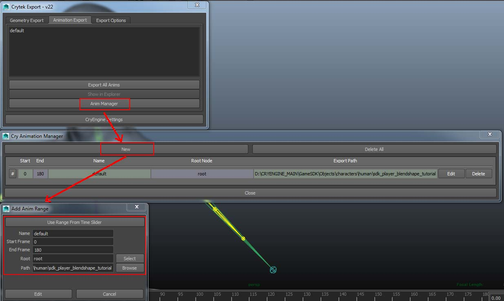
Анимация под названием «по умолчанию" является стандартной анимацией и будет автоматически воспроизводиться в редакторе Sandbox (т. е. когда вы добавляете этот символ как объект "AnimObject").Вы экспортировали 4 файла: *.CHR файл, *.SKIN файл промежуточной анимации *.I_CAF файл и, возможно, CRYENGINE *.MTL файл материала.
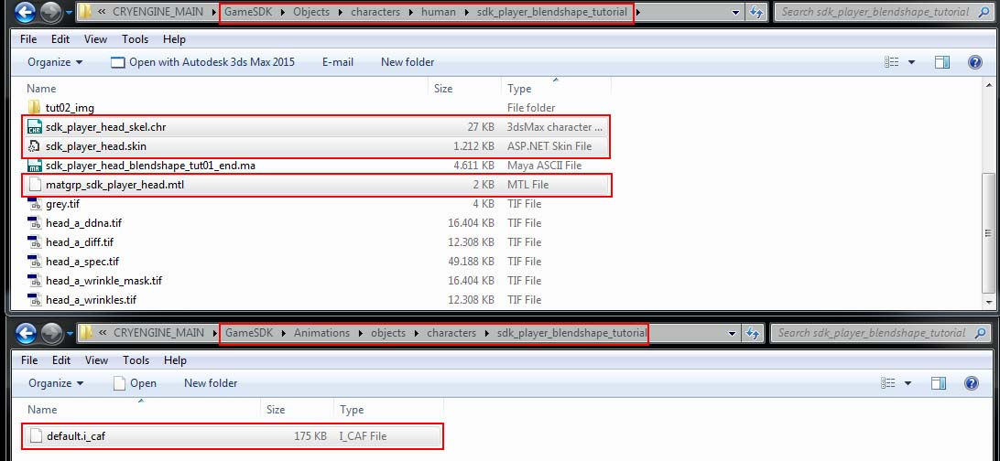
Теперь, когда мы успешно экспортировали наши ресурсы, пришло время перейти к части CRYENGINE этого урока.